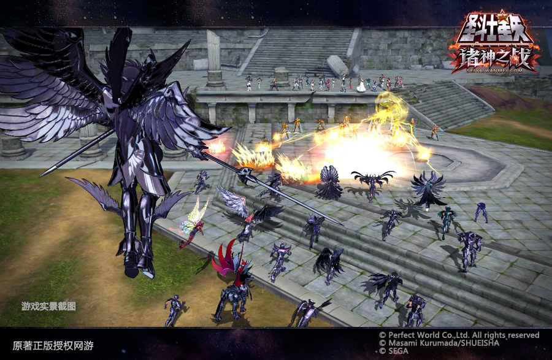

金鸡报晓！圣域军团2017年度亮点更新爆料

凯歌辞旧岁，金鸡贺新春。新春的焰火点燃了新的开始，在全新的一年里，《圣斗士星矢OL》全体官方人员，将以更加饱满的热情，为全体玩家打造更加精良的产品品质。在全新的2017年，我们将推出更加多样，更加实际的玩法，让广大玩家感受到全新的游戏体验。
一、时代变迁：全新原创剧情
红色的迷雾笼罩了整个圣域，虚无之神拉蒙斯与撒里诺针对圣域的攻势愈演愈烈，圣域将面临何种命运？2017年圣域军团将为广大玩家，推出全新原创剧情，为广大圣迷开启全新的篇章！新春过后，新的故事，也会逐步的向广大玩家开放。
伴随着原创剧情的诞生，全新的场景地图及主线任务也将陆续降临。届时，广大玩家可以360度全方位的了解的崭新的故事剧情。
二、第九职业：改变世界的命运
在全新的故事剧情中，将有一位神秘的角色，打破世界的格局。第九职业将带着历史的使命降临！拥有传说级别、超神能量的他，具备改变世界的力量！在新的篇章里，他将带着各种BUFF去与敌人战斗。圣域军团将在春节过后，一层层剥开他神秘的面纱，然而现在，他还是个谜！
三、全新神衣：创世主神的荣耀
全新剧情当中，拥有至高无上力量的主神，曾穿着比神圣衣能量巨大数倍的专属战衣，开辟了宇宙的起源！世后经历了世世代代的变迁，代表各自领域的神，纷纷创建了属于自己的护甲！
随着剧情的不断推进，拥有创世之力的全新神衣，也将逐步面世。这次，你将超越神的存在！
四、星座斗魂：让战斗更加自由
全新圣衣将会带来革命性的斗魂变化，全新的星座斗魂，将具有更加灵活的自由度。广大玩家可根据自己的喜好，激活属于自己的个性斗魂。生存、爆发、控制、恢复等等的差异化，将决定各自的战斗发展方向。
五、平行空间：跨服大乱斗
在剧情、场景、圣衣、斗魂的全方位更新下，圣域军团将打造属于强者的跨服中立区域。届时，跨服中立区域也将植入旗帜区，幻境区等等其他区域，产出大量日常奢华福利。这里将在指定的时间开放。
全服符合进入跨服的玩家，均可进入此区域，玩家不仅可以在这里竞技、切磋，还可以进行福利争夺。

六、互动世界：打破虚拟的阻隔
圣域军团在2017年，将着力优化游戏内的交互系统，让广大玩家在组队、交互时更加方便。在特定的情景下，你可以打破服务器的阻隔，实现跨服送花、结婚、密友任务等等一系列的操作！
最后，《圣斗士星矢OL》全体官方人员，恭祝广大玩家新春快乐，阖家幸福！在新的一年里，继续支持女神，继续为了大地的爱与和平奋斗！